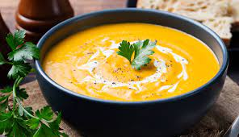

Sopa crema de calabaza

Te tiro unos datos de este manjar, cucha: La sopa de calabaza es un plato elaborado principalmente a base de calabaza cocida y otros ingredientes complementarios. Es popular en muchas culturas debido a su sabor dulce natural y su textura cremosa. Además, se trata de una receta rica en fibra y baja en calorías, por lo que es perfecta para adelgazar.
Ingredientes
| Cant |
Productos |
| 1 |
Calabaza |
| C/N |
Aceite de oliva |
| 50 cc |
Crema |
| 1 |
Cebolla |
| 1 pizca de |
Sal |
| 1 pizca de |
Pimienta |
| 1 |
Caldo |
| 1 pedazito de |
Queso fresco |
Paso a paso
- Con nuestra calabaza cortada, vamos a poner una olla o sartén al fuego con aceite de oliva y allí vamos meter nuestros cubitos de calabaza junto con la cebolla picada.
- Lo que sigue es condimentar, en este caso: Sal y pimienta.
- Una vez que los ingredientes hayan estado un ratito salteándose, vamos a disolver un caldo en una taza con algua caliente y a echarla en la olla. Así dejamos los ingredientes al fuego hasta que la calabaza esté bien cocida.
- Lo siguiente es retirar del fuego y con una minipimer, triturar todo hasta que esté bien unificado.
- Finalmente, vamos a echar un buen chorro de crema de leche en nuestra preparación.
- Para servir, vamos a colocar en el cuenco, unos pedacitos de queso fresco (o el que deseen) y luego echar por encima la sopa.
- A comer compa, a ver si te alimentas mejor.